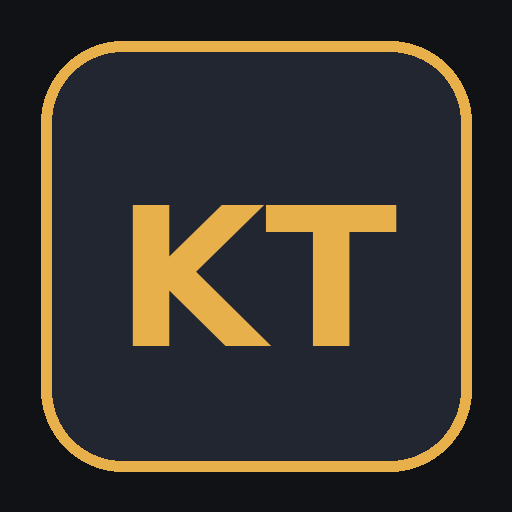

<!doctype html><html lang="es"><head><meta charset="utf-8"><meta name="viewport" content="width=device-width,initial-scale=1"><title>KT Companion — Alpha</title><style>body{margin:0;background:#0b0e10;color:#eee;font-family:Arial,sans-serif}*{box-sizing:border-box}.screen{min-height:100vh;display:flex;align-items:center;justify-content:center}.box{width:min(900px,92vw);text-align:center}.logo{width:170px}.alpha{letter-spacing:5px;color:#d85b18;font-weight:bold;margin:15px}.menu{display:grid;grid-template-columns:repeat(2,1fr);gap:14px;margin-top:30px}.btn{background:#1b2226;color:#eee;border:1px solid #424a4e;border-radius:8px;padding:18px;font-size:17px;cursor:pointer}.btn:hover{background:#2b3338}.primary{background:#d85b18;border-color:#e7773d}.top{position:fixed;top:0;left:0;right:0;height:60px;background:#151a1d;border-bottom:1px solid #333;display:flex;align-items:center;padding:0 20px;z-index:3}.top b{letter-spacing:1px}.top button{margin-left:auto;background:#222a2e;color:#fff;border:1px solid #444;padding:9px 14px;border-radius:5px}.content{max-width:1000px;margin:85px auto 30px;padding:20px}.choices{display:grid;grid-template-columns:repeat(3,1fr);gap:12px}.choice{background:#171d20;color:#eee;border:1px solid #41494d;border-radius:8px;padding:18px;cursor:pointer}.choice.selected{border-color:#d85b18;background:#2a201a}.ops{display:grid;grid-template-columns:repeat(3,1fr);gap:8px}.bar{display:flex;justify-content:space-between;margin-top:20px}.saved{background:#171d20;padding:14px;margin:8px 0;border:1px solid #333;border-radius:6px}.small{color:#9da3a6;font-size:13px}@media(max-width:700px){.menu,.choices,.ops{grid-template-columns:1fr}}</style></head><body><div id="app"></div><script>const A=document.getElementById('app');let team=null,map=null,op=null;const teams=['Angels of Death','Plague Marines','Kill Team de prueba'],maps=['Mapa de prueba 01','Mapa de prueba 02','Mapa de prueba 03'],ops=['Eliminar al líder enemigo','Controlar un objetivo','Realizar una acción de misión','Mantener una posición','Conservar un operativo clave','Negar un objetivo','Sobrevivir con un especialista','Conseguir ventaja de posición','Ejecutar la misión'];function splash(){A.innerHTML='<main class="screen"><div class="box"><div class="alpha">ALPHA VERSION</div><p class="small">INITIALISING BATTLE SYSTEM</p></div></main>';setTimeout(home,900)}function head(){return '<div class="top"><b>⚔ KILL TEAM COMPANION · ALPHA</b><button onclick="home()">INICIO</button></div>'}function home(){A.innerHTML=head()+'<main class="content"><div style="text-align:center"><h1>KT COMPANION</h1><p class="small">Herramientas tácticas para Kill Team</p></div><div class="menu"><button class="btn primary" onclick="newMatrix()">🗺️ MATRIZ NUEVA</button><button class="btn" onclick="saved()">📂 MATRICES GUARDADAS</button><button class="btn" onclick="alert(\'Calculadora de disparo: módulo independiente en desarrollo.\')">🎯 CALCULADORA DISPARO</button><button class="btn" onclick="alert(\'Calculadora de combate: módulo independiente en desarrollo.\')">⚔️ CALCULADORA COMBATE</button></div></main>'}function newMatrix(){team=map=op=null;step(1)}function step(n){let h=head()+'<main class="content">';if(n===1){h+='<h2>NUEVA MATRIZ · 1/3 — KILL TEAM</h2><div class="choices">'+teams.map((x,i)=>'<button class="choice '+(team===x?'selected':'')+'" onclick="team=teams['+i+'];step(1)"><h3>'+x+'</h3><p class="small">Equipo provisional Alpha</p></button>').join('')+'</div><div class="bar"><span></span><button class="btn primary" '+(team?'':'disabled')+' onclick="step(2)">SIGUIENTE →</button></div>'}else if(n===2){h+='<h2>NUEVA MATRIZ · 2/3 — MAPA</h2><p class="small">Tablero de 22 × 30 pulgadas.</p><div class="choices">'+maps.map((x,i)=>'<button class="choice '+(map===x?'selected':'')+'" onclick="map=maps['+i+'];step(2)"><h3>🗺️ '+x+'</h3><p>22 × 30</p></button>').join('')+'</div><div class="bar"><button class="btn" onclick="step(1)">← ATRÁS</button><button class="btn primary" '+(map?'':'disabled')+' onclick="step(3)">SIGUIENTE →</button></div>'}else{h+='<h2>NUEVA MATRIZ · 3/3 — OPERACIÓN CRÍTICA</h2><p class="small">Elige exactamente una.</p><div class="ops">'+ops.map((x,i)=>'<button class="choice '+(op===i?'selected':'')+'" onclick="op='+i+';step(3)">'+(i+1)+'. '+x+'</button>').join('')+'</div><div class="bar"><button class="btn" onclick="step(2)">← ATRÁS</button><button class="btn primary" '+(op===null?'disabled':'')+' onclick="openBoard()">CREAR MATRIZ →</button></div>'}h+='</main>';A.innerHTML=h}function openBoard(){localStorage.setItem('ktCurrentSelection',JSON.stringify({team,map,op}));A.innerHTML=head()+'<iframe src="fases.html?embedded=1" style="position:fixed;top:60px;left:0;width:100%;height:calc(100vh - 60px);border:0"></iframe>'}function saved(){A.innerHTML=head()+'<main class="content"><h2>📂 MATRICES GUARDADAS</h2><p class="small">Las matrices se guardan desde el Battle Board.</p><button class="btn" onclick="openBoard()">ABRIR BATTLE BOARD</button><button class="btn" onclick="window.open(\'pdf.html\',\'_blank\')">📄 PDF</button><div style="margin-top:20px"><button class="btn" onclick="home()">← VOLVER</button></div></main>'}splash()</script></body></html>